Think IT（シンクイット）
https://thinkit.co.jp/
【Think IT】“オープンソース技術の実践活用メディア” をスローガンに、インプレスグループが運営するエンジニアのための技術解説サイト。開発の現場で役立つノウハウ記事を毎日公開しています。
フィード
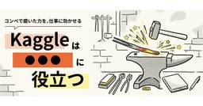
Kaggleは「データ人材を育てる」のに役立つ ーメダルがなくても始められる、仲間づくりと組織への還元
Think IT（シンクイット）
Kaggleは「データ人材を育てる」のに役立つ ーメダルがなくても始められる、仲間づくりと組織への還元itoh2026年10月16日Kaggleは「○○」に役立つシェア ポスト はてブ 優先するニュース提供元に追加 はじめに私は現在、メーカーでデータサイエンティストとして働いていますが、本連載の他の執筆者の皆さまのような、いわゆる「強いKaggler」ではありません。Kaggleのランクは「Competitions Contributor」で、メダルを獲得できるような実力も持ち合わせていません。また、公式運営のコンペティションへの参加経験もそれほど多くありません。そのような私ですが、Kaggleから非常に多くの学びと良い影響を受けてきました。私自身はダイハツ工業株式会社の太古無限さんが主催されている社内Kaggleコンペティションにゲストとして参加させていただいており、私のKaggle活動はこちらが中心です。その活動を通して、Kaggleは単なる機械学習コンペティションではなく、「人材育成」に大きく役立つ仕組みであると感じるようになりました。本記事では、私が実際にダイハツ社の社内コンペへ参加しながら感じている「Kaggleが人材育成に役に立つ理由」と「どのようにコンペに取り組んでいるか」について紹介したいと思います。 図1:執筆者のkaggleプロフィールなぜ人材育成にKaggleなのか？データサイエンスを学ぼうと思ったとき、多くの方はまず「書籍を読む」「動画を見る」「研修を受ける」といった方法から始めるのではないでしょうか。もちろん、個人に合った学習手段を選ぶことが大切です。ただ、私は書籍などでデータサイエンスやプログラミング言語の基礎を学んだら、早い段階でKaggleのPlaygroundコンペやコミュニティコンペに取り組んでみることをお勧めしたいです。その理由は大きく2つあります。1つ目は、Kaggleには「まず手を動かして課題を解く環境」があることです。Kaggleでは、データと評価指標が与えられ、その中で参加者は試行錯誤を繰り返しながらスコア改善を目指します。データサイエンスに限った話ではないかもしれませんが、何かを学ぶうえで重要なのは、知識をインプットするだけではなく、実際に手を動かしてみることだと思います。データの前処理、特徴量作成、モデル構築、評価、
2日前

MySQLの「ST_Equals()」や「ST_Overlaps()」など8つの関数でポリゴンどうしの位置関係を見比べてみよう
Think IT（シンクイット）
MySQLの「ST_Equals()」や「ST_Overlaps()」など8つの関数でポリゴンどうしの位置関係を見比べてみようitoh2026年10月16日MySQLで学ぶGIS入門シェア ポスト はてブ 優先するニュース提供元に追加 はじめに前回は、1つの基準ポリゴンにいろいろな位置関係にある5本のLINESTRINGを用意し、8つの判定関数の結果を見比べてみました。今回はその続きとして、LINESTRINGの代わりに相手をPOLYGONに変えて同じことをやってみます。基準ポリゴンは前回と同じです。前回のおさらいと基準ポリゴン舞台は前回と同じ、兵庫県西脇市の日本へそ公園付近です。北緯35度・東経135度の点を左下のカドとして、北と東にそれぞれ0.01度ずつ広げた長方形を「基準ポリゴン」として @poly 変数に入れておきます。mysql> SET @poly = ST_GeomFromText( -> 'POLYGON((35 135, 35 135.01, 35.01 135.01, 35.01 135, 35 135))', 6668);Query OK, 0 rows affected (0.00 sec)比較に使う8つの関数も前回と同じです。忘れてしまった方のために再掲しておきます。 ST_Equals(A, B) 図形として同じか ST_Disjoint(A, B) まったく共有点がないか ST_Intersects(A, B) 共有点がひとつでもあるか ST_Touches(A, B) 境界だけで接しているか ST_Crosses(A, B) 突き抜けているか ST_Overlaps(A, B) 部分的に重なっているか ST_Within(A, B) AがBに含まれるか ST_Contains(A, B) AがBを含むか比較する相手を用意する(POLYGON)今回用の比較相手のジオメトリデータとして、前回作成した g27 テーブルに、5つのPOLYGONを追加登録します。mysql> INSERT INTO g27 VALUES -> (11, 'poly1_inside', ST_GeomFromText('POLYGON((35.008 135.0085, 35.008 135.009, 35.009 135.009, 35.009 135.008
2日前
LF Energyのミートアップから日立製作所のプレゼンテーションを紹介
Think IT（シンクイット）
LF Energyのミートアップから日立製作所のプレゼンテーションを紹介iioka2026年10月16日LF Energyミートアップ レポートシェア ポスト はてブ 優先するニュース提供元に追加 The Linux Foundation配下、LF Energyのミートアップから日立製作所のOSPOメンバーが行ったプレゼンテーションを紹介する。 セッションを担当したのは日立製作所のDarshan Chawda氏と西島直氏の2名だ。 プレゼンテーションは電力需要の予測からグリッドの設計支援、送電のシミュレーション、AIによる運営支援、制御システム支援、電力グリッド専用のAIモデルなどを続けてデモを交えて紹介するという内容だ。 ここからはOpenSTEF、CoMPAS、Power Grid Model、AINETUS、OperatorFabric、GridFMなどを順番に説明した。 AIはエネルギー業界にとっては電力を多大に消費するアプリケーションになるが、電力の需要予測を行うことで最適化が実施できるとして良い面と悪い面を紹介。 AINETUSはAIを使って電力運用を支援するプロジェクトだ。電力需要が増えているにも関わらず送電線の容量が不足し電力を流したいのに流せない状況（輻輳）を解消するためには、送電設備への経路を変更するなどの処理が必要になる。その部分についてAIを使って対処方法とその理由などを生成するのがAINETUSの機能となる。 スライドでは送電線のトポロジーを表示して、どの送電経路を使えば需要に応える送電ができるのか？ を解決するという内容を紹介している。 デモでは経路変更によって輻輳が解消されたという結果を紹介している。 GridFMは電力グリッドのシミュレーションにAIを使うという野心的なプロジェクトだが、公式ページの情報が少なく実態がどのようなものなのかは推測が難しい。少なくともIBM、AWS、Red HatなどのITベンダーに加えてアメリカのエネルギー省、ローレンスリバモア国立研究所、アルゴンヌ国立研究所などが参加していることから、エネルギー関連のプロジェクトとしては注目するべきだろう。●参考：GridFM GridFMの機能について解説したスライドでは「LLMのような機能を持つ」と記されているが、中身はLLMではないようだ。DataKitを使って電
2日前
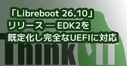
「Libreboot 26.10」リリース ─ EDK2を既定化し完全なUEFIに対応
Think IT（シンクイット）
「Libreboot 26.10」リリース ─ EDK2を既定化し完全なUEFIに対応 Chromebook 233機種の構成を追加、Windows 10／11やsystemd-bootも利用可能にkawahara2026年10月16日シェア ポスト はてブ 優先するニュース提供元に追加 Libreboot Projectは10月15日(現地時間)、オープンソースのブートファームウェア「Libreboot 26.10 "Ominous Olive"」をリリースした。 「Libreboot」は、対応するIntel／AMDおよびARM64搭載機器のプロプライエタリなBIOS／UEFIを置き換えるブートファームウェア。CPUやメモリーコントローラなどを初期化し、LinuxやBSDなどのOSを起動できる状態にする。 「Libreboot 26.10」は、従来のGRUBやSeaBIOSに代わり、ほぼすべての64bit対応機種でEDK2を既定のペイロードとした大型リリース。標準的なUEFI環境を提供することで、LinuxのUnified Kernel Image(UKI)やsystemd-bootのほか、Windows 10／11、UEFIモードのOpenBSDおよびFreeBSDなどを起動できるようになった。 ハイライトは次の通り。 「Libreboot 26.10」は、Webサイトからダウンロードできる。(川原 龍人/びぎねっと)[関連リンク]リリースアナウンス この記事をシェアしてください シェアする ポストする >ブクマする noteで書く 優先するニュース提供元にThink ITを追加 前の記事「Ubuntu 26.10」リリース ─ Rust製coreutilsへ全面移行 関連記事この記事の筆者 kawahara kawaharaのプロフィールを見る 筆者の人気記事 「Apache HTTP Server 2.4.69」リリース ─ 20件の脆弱性を修正10月3日 23:23 「Python 3.14.8」リリース ─ 緊急のアップデートリリース10月1日 23:32 「Raspberry Pi OS」2026年10月6日版リリース ─ デスクトップ環境を改善10月8日 1:51 「Ubuntu 26.10」リリース ─ Rust製coreutilsへ全面移行10月
2日前
「Ubuntu 26.10」リリース ─ Rust製coreutilsへ全面移行
Think IT（シンクイット）
「Ubuntu 26.10」リリース ─ Rust製coreutilsへ全面移行 GNOME 51を採用、RISC-V向けデスクトップイメージやローカル音声入力も提供kawahara2026年10月15日シェア ポスト はてブ Canonicalは10月15日(現地時間)、Linuxディストリビューション「Ubuntu 26.10」をリリースした。コードネームは「Stonking Stingray」。LTS版に当たらない通常リリースとなっており、2027年7月まで9カ月間サポートされる。 「Ubuntu 26.10」では、デスクトップ環境にはGNOME 51を採用し、表示処理やアクセシビリティ、ファイル操作、リモートデスクトップなどが改善された。また、従来一部でGNU版を使用していた基本コマンドについてもRust製の「uutils coreutils」へ移行し、標準のcoreutilsがすべてRust実装となった。 「Ubuntu 26.10」のハイライトは次の通り。 uutils coreutilsへの移行では、互換性上の理由からGNU版が残されていた「cp」「mv」「rm」もRust実装に置き換わった。必要な場合はGNU版coreutilsへ戻すこともできる。既存のシェルスクリプトや管理ツールで固有の挙動に依存している場合は確認が必要。 デスクトップでは、音声入力機能のMynaが技術プレビューとして公開された。音声認識は端末上で処理され、音声データを外部サービスへ送信しない。Mynaは標準ではインストールされず、機能や仕様も今後変更される可能性がある。 システム面では「systemd-sysv-generator」が削除され、従来の「/etc/init.d」スクリプトからsystemdサービスを自動生成する機能が利用できなくなった。Ubuntu ServerではOpenSSHがGSSAPI／Kerberos対応版と非対応版に分割され、通常の新規インストールでは非対応版が標準となる。 「Ubuntu 26.10」のデスクトップ、サーバー、WSL、クラウド向けイメージはWebサイトから入手できる。Kubuntu、Lubuntu、Xubuntu、Ubuntu Budgie、Ubuntu MATE、Ubuntu Studioなどの公式フレーバーも同時にリリースされている
2日前
【AIと著作権】フェアユースなら、使っていい？ 1
1
Think IT（シンクイット）
【AIと著作権】フェアユースなら、使っていい？ kaoringo2026年10月15日Gen AI Timesシェア ポスト はてブ 優先するニュース提供元に追加 本連載は、生成AIコミュニティ「IKIGAI lab.」のメンバーが、それぞれの専門領域で培ってきた知見を持ち寄り、技術・ビジネス・ガバナンスなどの多角的な視点から最新のAI動向をひも解いていきます。近年、企業における生成AIの活用が進んでいます。総務省「令和8年版 情報通信白書」では、日本企業の生成AI活用方針の策定状況が広がっていることが示されています。 【出典】「令和 8 年版 情報通信白書」(総務省) P22 第2章 第1節 企業におけるAI利用の現状 より2024年度の企業向け調査では「積極的に活用する方針」「活用する領域を限定して利用する方針」を併せて5割程度(49.7%)であったものが、2025年度は7割に迫る勢い(68.9%)を見せています。一方、企業が生成AI活用について懸念するリスクとして「情報漏洩などのセキュリティリスク」(46.4%)「出力結果の精度」(35.3%)に次いで「著作権等の権利を侵害する可能性がある」(31.3%)が挙げられています。【出典】「令和 8 年版 情報通信白書」(総務省) P26 第2章 第1節 企業におけるAI利用の現状 よりつまり、企業は生成AIを使い始める一方で、セキュリティリスクや著作権については不安を抱えていることが読み取れます。今回は、著作権にフォーカスし、実際にAIによる著作物の利用が裁判で争われた場合、どのように判断されるのかを、米国で注目を集めたThomson Reuters対ROSS Intelligence事件を具体例として取り上げてみたいと思います。AIによる学習は「フェアユース」ではなかった？筆者がAIで生成今回取り上げるトムソン・ロイター対ROSS Intelligence事件(Thomson Reuters Enterprise Centre GmbH v. ROSS Intelligence Inc.)はどういったものなのでしょうか？以下に簡単に時系列と出来事をまとめました。時期裁判所・出来事何が起きたか2020年5月デラウェア州連邦地裁に提訴トムソン・ロイターがROSS Intelligence(以下、ROSS)を提訴。We
3日前
生成AIの回答が正しいかを人の目視で確かめる限界に──テクマトリックスがElith開発の品質評価ツール「GENFLUX Evaluation」を販売開始
Think IT（シンクイット）
※本記事には、2026年9月25日に実施したテクマトリックス株式会社および株式会社Elithへの取材内容を含みます。📌 このニュース、3行で押さえるなら 📌生成AI・RAG・AIエージェントの回答品質を回答品質／安全性／パフォーマンス／レッドチーミング／コンプライアンスの5つの観点から評価し、改善ポイントまで可視化するプロンプトインジェクションや脱獄を想定した攻撃テストを備え、通常の品質評価では見つけにくい情報漏えいのリスクも検証できる標準テンプレートによる評価に加え、エンジニアが顧客の業務に合わせて評価項目・評価基準を個別設計するカスタマイズ支援も提供する📝 Think IT編集部の見解 📝生成AIを業務に組み込んだ企業が次に直面するのは、「このAIの回答を信じてよいか」を誰がどう保証するのかという問題だ。取材でテクマトリックスの担当者が語った現場の実情は率直だった。多くの場合、人が目視で確認している。プロンプトを投げ、返ってきた答えが正しいかを人が読む。Wi-Fiの解約期日のような単純な事実確認ならそれで足りるが、差別的な表現が混じっていないか、前回より精度が上がったのか下がったのか、といった判断は目視では追いつかない。テスト項目は品質・安全性・法令対応と観点を分けるだけで膨れ上がる。GENFLUX Evaluationはこの手作業を基盤に載せる製品であり、方向性としては素直だ。注目したいのは、プレスリリースに実際の判定例が掲載されている点である。「法人向けプランで、個人情報を含む問い合わせ履歴はどのくらい保存されるか」という質問に対し、保存期間を「無期限」と説明したが、参照資料では標準30日・最大90日と定義されている、回答に担当者のメールアドレスをそのまま含めている、という2つの理由で「問題」と判定されている。スコアだけでなく、なぜ不合格なのかが自然文で示されることが、改善につながる評価という訴求の実体だろう。一方で、読者が確認すべき点もある。最大の論点は、評価する側のAIをどう信頼するかだ。Elithによれば評価はルールベースとLLM-as-a-judgeの組み合わせで行われる。同じ入力でスコアがぶれないかを尋ねたところ「この評価ツール自体も評価している」「日々チェックしている」との回答だった。姿勢としては妥当だが、再現性を定量的に示す説明ではない...
3日前
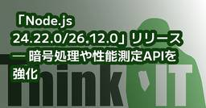
「Node.js 24.22.0/26.12.0」リリース ─ 暗号処理や性能測定APIを強化
Think IT（シンクイット）
「Node.js 24.22.0/26.12.0」リリース ─ 暗号処理や性能測定APIを強化 PKCS#12解析や汎用MACに対応kawahara2026年10月15日シェア ポスト はてブ 優先するニュース提供元に追加 Node.js Projectは10月14日(現地時間)、オープンソースのJavaScript実行環境「Node.js 24.22.0」「Node.js 26.12.0」をリリースした。24.22.0は「Krypton」のコードネームを持つLTS版、26.12.0は新機能を先行提供するCurrent版となる。 「Node.js」は、Webブラウザ以外の環境でJavaScriptを実行するためのランタイム。サーバサイドのWebアプリケーションやAPI、コマンドラインツール、開発支援ツールなどで広く利用されている。 「Node.js 24.22.0」では、暗号処理を中心に複数のAPIを追加した。PKCS#12形式のデータを解析する「crypto.parsePKCS12()」や汎用的なMAC(メッセージ認証コード)APIに加え、SIVおよびGCM-SIV暗号モードへの対応が行われている。性能測定、SQLite、ネットワーク、ユーティリティ関連の機能も拡張された。 「Node.js 24.22.0」のハイライトは次の通り。 同時公開された「Node.js 26.12.0」では、WebSocketフレームのマスク処理を行う「websocketMask()」と「websocketUnmask()」がHTTPモジュールに追加された。このほか、設定ファイル機能が安定版へ移行し、「process.finalization」がリリース候補段階となった。組み込みSQLiteは3.54.0、OpenSSLは3.5.9、npmは11.20.0を収録する。 「Node.js」は、Webサイトから入手できる。(川原 龍人/びぎねっと)[関連リンク]リリースノート(24.22.0)リリースノート(26.12.0) この記事をシェアしてください シェアする ポストする >ブクマする noteで書く 優先するニュース提供元にThink ITを追加 前の記事「KDE Plasma 6.8」リリース ─ Waylandへ完全移行 次の記事「Ubuntu 26.10」リリース ─ Rus
3日前
「KDE Plasma 6.8」リリース ─ Waylandへ完全移行
Think IT（シンクイット）
「KDE Plasma 6.8」リリース ─ Waylandへ完全移行 リモートデスクトップや画面録画、HDRを強化、Unionテーマはベータ版へkawahara2026年10月15日シェア ポスト はてブ 優先するニュース提供元に追加 KDE Projectは10月14日(現地時間)、デスクトップ環境「KDE Plasma 6.8」をリリースした。プロジェクトの30周年に公開されたことから、「30th Anniversary Edition」と位置付けられている。 「KDE Plasma」は、LinuxやBSDなどUnix系OSで利用できるデスクトップ環境。パネルやウィジェット、テーマなどを柔軟にカスタマイズでき、近年はWaylandへの対応強化が進められてきた。 「KDE Plasma 6.8」は、新機能や操作性、性能を幅広く改善した正式な機能リリース。大きな変更としてPlasmaのX11セッションが廃止され、デスクトップセッションはWaylandのみとなった。このほか、リモートデスクトップや画面録画、HDR表示、アクセシビリティ、システム監視などが強化されている。 ハイライトは次の通り。 X11セッションの廃止後も、X11専用アプリケーションはXWaylandを通じて実行できる。また、KDEアプリケーション自体のX11対応が直ちに終了するわけではない。ただし、X11セッション固有の設定やツール、入力機器、画面共有などを利用している環境では、更新前にWaylandでの動作確認が必要となる。(川原 龍人/びぎねっと)[関連リンク]リリースアナウンス この記事をシェアしてください シェアする ポストする >ブクマする noteで書く 優先するニュース提供元にThink ITを追加 前の記事「IPFire 2.29 Core Update 204」リリース ─ VPN接続時のDNS障害を修正 次の記事「Node.js 24.22.0/26.12.0」リリース ─ 暗号処理や性能測定APIを強化 関連記事この記事の筆者 kawahara kawaharaのプロフィールを見る 筆者の人気記事 「Apache HTTP Server 2.4.69」リリース ─ 20件の脆弱性を修正10月3日 23:23 「Python 3.14.8」リリース ─ 緊急のアップデートリリース
3日前
「IPFire 2.29 Core Update 204」リリース ─ VPN接続時のDNS障害を修正
Think IT（シンクイット）
「IPFire 2.29 Core Update 204」リリース ─ VPN接続時のDNS障害を修正 OpenSSLやOpenSSHなど多数のパッケージ更新kawahara2026年10月15日シェア ポスト はてブ 優先するニュース提供元に追加 IPFire development teamは10月14日(現地時間)、オープンソースのファイアウォール向けLinuxディストリビューション「IPFire 2.29 Core Update 204」をリリースした。 「IPFire」は、Linuxをベースとするファイアウォール／ルーターディストリビューション。Web管理画面を備えており、侵入防止システム、VPN、プロキシ、ネットワーク監視などの機能を提供する。 「IPFire 2.29 Core Update 204」のハイライトは次の通り。 「IPFire 2.29 Core Update 204」は、Webサイトからダウンロードできる。(川原 龍人/びぎねっと)[関連リンク]リリースアナウンス この記事をシェアしてください シェアする ポストする >ブクマする noteで書く 優先するニュース提供元にThink ITを追加 前の記事「KDE Frameworks 6.31.0」リリース ─ 文字コード判定やファイル操作を改善 次の記事「KDE Plasma 6.8」リリース ─ Waylandへ完全移行 関連記事この記事の筆者 kawahara kawaharaのプロフィールを見る 筆者の人気記事 「Apache HTTP Server 2.4.69」リリース ─ 20件の脆弱性を修正10月3日 23:23 「Python 3.14.8」リリース ─ 緊急のアップデートリリース10月1日 23:32 「Raspberry Pi OS」2026年10月6日版リリース ─ デスクトップ環境を改善10月8日 1:51 「Ubuntu 26.10」リリース ─ Rust製coreutilsへ全面移行10月15日 23:25 「Python 3.15.0」リリース ─ 遅延インポートやfrozendictを導入10月10日 10:45 「Courier 2.0.8」リリース ─ ESMTP処理のクラッシュを修正10月2日 1:34 業界情報やナレッジが詰まったメルマガやソーシ
3日前
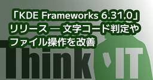
「KDE Frameworks 6.31.0」リリース ─ 文字コード判定やファイル操作を改善
Think IT（シンクイット）
「KDE Frameworks 6.31.0」リリース ─ 文字コード判定やファイル操作を改善 KIO、KDAV、KTextEditor、画像・メタデータ処理などを更新kawahara2026年10月14日シェア ポスト はてブ 優先するニュース提供元に追加 KDE Projectは10月9日(現地時間)、KDEアプリケーションの基盤となるライブラリ群「KDE Frameworks 6.31.0」をリリースした。 「KDE Frameworks」は、Qtを拡張するオープンソースのライブラリ・ソフトウェアコンポーネント群。ファイル操作、設定管理、アイコン、テキスト編集、ハードウェア検出、ネットワーク接続などの機能を提供し、KDE Plasmaや各種KDEアプリケーションで利用されている。 「KDE Frameworks 6.31.0」は月例アップデートの一環であり、文字コードの自動判定、ファイルのコピーや検索結果の更新、DAV同期、画像形式、メタデータ抽出、テキスト編集などが改善された。 ハイライトは次の通り。 「KDE Frameworks」は、Webサイトからダウンロードできる。(川原 龍人/びぎねっと)[関連リンク]リリースアナウンス この記事をシェアしてください シェアする ポストする >ブクマする noteで書く 優先するニュース提供元にThink ITを追加 前の記事「Samba 4.24.8」リリース ─ SMB3応答署名やCTDBなど10件を修正 次の記事「IPFire 2.29 Core Update 204」リリース ─ VPN接続時のDNS障害を修正 関連記事この記事の筆者 kawahara kawaharaのプロフィールを見る 筆者の人気記事 「Apache HTTP Server 2.4.69」リリース ─ 20件の脆弱性を修正10月3日 23:23 「Python 3.14.8」リリース ─ 緊急のアップデートリリース10月1日 23:32 「Raspberry Pi OS」2026年10月6日版リリース ─ デスクトップ環境を改善10月8日 1:51 「Ubuntu 26.10」リリース ─ Rust製coreutilsへ全面移行10月15日 23:25 「Python 3.15.0」リリース ─ 遅延インポートやfrozendictを導
3日前
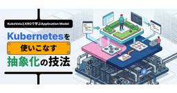
Platform Engineering時代のApplication Model設計 1
Think IT（シンクイット）
Platform Engineering時代のApplication Model設計itoh2026年10月14日Kubernetesを使いこなす抽象化の技法シェア ポスト はてブ 優先するニュース提供元に追加 はじめに本連載は今回で最終回です。 第1回から第5回まで、KubernetesにおけるApplication Modelを、歴史、比較、実装の順に調べてきました。第1回ではOpen Application Model(OAM)の登場と停滞を取り上げ、第2回ではHelm、KubeVela、Crossplane、Kroを同じシナリオで比較しました。 第3回、第4回、第5回では、KubeVelaのDefinition、Crossplane 2.0のFunctionパイプラインとクラウドリソース管理、KroのResource GraphとCRD生成を実際に動かして確認しました。どのツールでも、短い入力からDeployment、Service、Ingress、HPA、NetworkPolicyなどを生成できます。組織が、サービスの作成から運用までの標準的な手順であるGolden Path(ゴールデンパス)を用意すれば、開発者はKubernetesのリソースを1つずつ記述せずにサービスを追加できます。Golden Pathで提供する操作なら、通常のリリースや設定変更も開発チームが自分たちで進められます。ここまでは、すでに実現できていると言えるでしょう。 一方、運用中のApplicationに影響する共通定義の変更を事前に確認し、問題があれば適用を止めたり戻したりする機能は不足しています。PlatformチームがPlatform APIと共通定義を保守できることも必要です。 最終回の今回では連載で扱ったツールの問題点を確認し、Platform Engineering時代のApplication Modelに必要な条件と、筆者が考える構成を提唱します。結論：この連載で扱ったツールの比較と問題点Platform APIを公開した後も、共通定義の更新、差分の確認、ロールバックを続ける必要があります。Helm：同じ記述の反復が多く、条件分岐が増えるほどTemplateを読み解くのが難しくなります。Go Templateは値の置換には使えますが、複雑な条件から複数のリソースを組み立
4日前
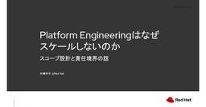
【クラウドネイティブ会議】危機・スコープ・Quick Winから考えるPlatform Engineeringを組織全体へ広げるための変革の進め方
Think IT（シンクイット）
【クラウドネイティブ会議】危機・スコープ・Quick Winから考えるPlatform Engineeringを組織全体へ広げるための変革の進め方iioka2026年10月14日「クラウドネイティブ会議」レポートシェア ポスト はてブ 優先するニュース提供元に追加 「クラウドネイティブ会議」で、レッドハットのシニアコンサルタントである木嶋幸子氏は「Platform Engineeringはなぜスケールしないのか――スコープ設計と責任境界の話」と題して講演した。Platform Engineeringは、技術やツールを導入するだけでは組織全体へ広がらない。共通の危機を言語化し、誰のどの課題を解決するのかを定め、やらないことを含めて活動範囲を設計する必要がある。本稿では組織変革の「8つのステップ」を手掛かりに、ビジョンと戦略、Quick Winを組織の成果へつなげるための考え方を紹介する。技術導入では終わらない、組織変革としてのPlatform EngineeringレッドハットがPlatform Engineeringのプロジェクトで行うのは、単に開発者ポータルやゴールデンパスを構築することではない。システム思考やデザイン思考、顧客中心主義、CI/CD、XP、スクラム、リーン、エンタープライズアジャイル、エンタープライズアーキテクチャなど、複数のプラクティスを顧客自身が実践できるように定着を支援する。Platform Engineeringには「この手順に従えば成功する」という一つの教科書があるわけではない。組織や開発体制に応じてプラクティスを組み合わせ、成果へつなげる必要がある。木嶋氏はプラットフォームエンジニアリングの成熟度モデルを示し、ボランティア的、一時的な取り組みから、専任チームによる戦略的な活動、スケーラブルなプロダクト、さらに組織全体で最適化された状態へと発展していく姿を説明した。ただし実際には最初の段階から先へ進めず、小規模な改善活動にとどまるケースも少なくない。「カタログに載っているような、キラキラした成功はレベル3やレベル4です。しかし実際にやってみると、最初の一手に悩み、なかなかレベル1から先へ行けないことがあります」と木嶋氏は語った。レベル1から先に進めない理由の一つは、Platform Engineeringを技術導入としてだけ捉えてしまうこ
4日前
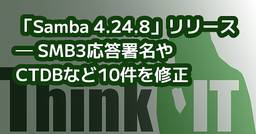
「Samba 4.24.8」リリース ─ SMB3応答署名やCTDBなど10件を修正
Think IT（シンクイット）
「Samba 4.24.8」リリース ─ SMB3応答署名やCTDBなど10件を修正 大文字の16進数設定や大文字・小文字だけが異なるファイル名の処理にも対応kawahara2026年10月13日シェア ポスト はてブ 優先するニュース提供元に追加 Samba Teamは10月12日(現地時間)、オープンソースのファイル／プリント共有ソフトウェア「Samba 4.24.8」をリリースした。 「Samba 4.24.8」では、SMB3のセッション設定応答に対する署名、ファイル名の変更、winbind、Kerberos暗号形式の設定、CTDBクラスターなどに関する10件の不具合が修正された。 「Samba 4.24.8」のハイライト次の通り。 なお、Sambaの最新安定版は「Samba 4.25系列」となっている。また、Samba 4.22系列は4.25系列の正式公開に伴ってサポート終了となっている。 「Samba」は、Webサイトからダウンロードできる。(川原 龍人/びぎねっと)[関連リンク]リリースノート この記事をシェアしてください シェアする ポストする >ブクマする noteで書く 優先するニュース提供元にThink ITを追加 前の記事「COSMIC Epoch 1.10.0」リリース ─ ペンタブレットの画面割り当てに対応 次の記事「KDE Frameworks 6.31.0」リリース ─ 文字コード判定やファイル操作を改善 関連記事この記事の筆者 kawahara kawaharaのプロフィールを見る 筆者の人気記事 「Apache HTTP Server 2.4.69」リリース ─ 20件の脆弱性を修正10月3日 23:23 「Python 3.14.8」リリース ─ 緊急のアップデートリリース10月1日 23:32 「Raspberry Pi OS」2026年10月6日版リリース ─ デスクトップ環境を改善10月8日 1:51 「Ubuntu 26.10」リリース ─ Rust製coreutilsへ全面移行10月15日 23:25 「Python 3.15.0」リリース ─ 遅延インポートやfrozendictを導入10月10日 10:45 「Courier 2.0.8」リリース ─ ESMTP処理のクラッシュを修正10月2日 1:34 業界情報やナ
5日前
DevOpsの「Dev」にAIをどのように組み込んでいくのか
Think IT（シンクイット）
DevOpsの「Dev」にAIをどのように組み込んでいくのかitoh2026年10月13日実践で学ぶDevOpsツールの使いこなし術シェア ポスト はてブ 優先するニュース提供元に追加 はじめに前回では、連載のまとめとして「DevOpsはもう古いのか?」を取り上げました。AIによって定型コードの記述や障害対応の初期調査は大幅に速くなる一方、開発と運用が協力して価値を届け続けるという思想と、信頼性を支えるCI/CDパイプラインの役割は変わらないと整理しました。今回はその続編として、「Dev(開発)」に焦点を当てます。多くの開発現場はDevOpsやCI/CD、品質の自動化が必要であることを以前から認識していました。しかし、人手不足や締め切りに追われ、自動テストの導入、コードレビューの徹底、静的解析の活用を十分に進められなかった現場も少なくありません。「やったほうがよいとは分かっているが、手が回らない」というのが本音だったでしょう。開発におけるAI活用は、長くエディタ上のコード補完や、プロンプトで指示した関数の生成といった個人作業の効率化が中心でした。現在では、その対象が開発ライフサイクルやチームのプロセス全体へ広がっています。手が回らなかったDevOpsの取り組みを、AIの補助によって現実的なコストで運用できる可能性が出てきたのです。本稿では、開発の各フェーズでAIがどのように使われ始めているか、それに伴って開発者の役割とドキュメントのあり方がどう変わるかを解説します。開発ライフサイクルの各フェーズで起きている変化AIの活用は、単一の作業の自動化にとどまりません。要件定義、設計、実装、レビュー、テスト、ドキュメント管理のそれぞれで、作業のやり方が変わり始めています。 開発ライフサイクルの各フェーズでのAI活用要件定義と設計自然言語で書かれたアイデアや大まかな要求を、構造化された仕様やアーキテクチャ案に落とし込む作業を、AIが支援します。構築したい機能の概要を伝えると、APIのインターフェース定義、データベースのテーブル設計案、処理の流れを示す図のコードなどが提案されます。エンジニアは仕様や図をゼロから書く手間が減り、提示された案をセキュリティや拡張性の観点で確認して手直しする作業に集中できます。実装実装では、行単位のコード補完から、タスク単位で文脈を踏まえて変更を提案す
5日前
XREAL AURAが国内価格発表、2026年秋に発売予定 ほか
Think IT（シンクイット）
XREAL AURAが国内価格発表、2026年秋に発売予定 ほかiioka2026年10月13日週刊VRウォッチシェア ポスト はてブ 優先するニュース提供元に追加 今週も、バーチャル領域の最新動向をお届けします。XREALからはAndroid XRやGeminiを搭載した次世代ARグラス「XREAL AURA」の国内価格が発表されました。AI分野では、リアルタイムに物理環境をシミュレートする最先端ワールドモデル「Odyssey-3」が公開されています。活用事例としては、360ChannelによるANA向けの機内VR体験コンテンツ「ANA Virtual Ride Experience」が制作されました。さらにハードウェアでは、PC VRと単体動作の両立を実現する高解像度VRヘッドセット「Pimax Crystal Pro」が登場しています。ARグラス「XREAL AURA」価格発表、メモリ12GBモデルは税込み229,800円 XREALはスマートグラス「XREAL AURA」の国内価格を発表しました。メモリ12GB／ストレージ256GBモデルは税込み229,800円、16GB／512GBモデルは269,800円で、2026年秋の発売を予定しています。本機はグラス本体と演算用コンピュートパックで構成され、OSにはAndroid XRを採用しています。システムに組み込まれたGoogleのAI「Gemini」が視界を理解し、対話を通じた操作支援を行います。グラス部分は95グラムと軽量で、視野角70度の光学シースルーディスプレイと5段階の電子調光機能を備えています。予約購入者向けの支払い受付も始まっており、優先的に出荷枠が確保されます。本ニュースの詳細はこちら：ARグラス「XREAL AURA」価格発表、メモリ12GBモデルは税込み229,800円https://www.moguravr.com/xreal-aura-sale-info/ワールドモデル「Odyssey-3」が発表 Physics-IQで最高スコア66.1Odysseyは、バーチャル空間を生成するワールドモデル「Odyssey-3」を発表しました。プロンプトから物理法則をシミュレートする環境を作り出し、人やエージェントの行動による変化をリアルタイムで予測します。物理的正確性を測るベンチマーク「Physic
5日前
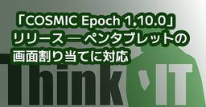
「COSMIC Epoch 1.10.0」リリース ─ ペンタブレットの画面割り当てに対応
Think IT（シンクイット）
「COSMIC Epoch 1.10.0」リリース ─ ペンタブレットの画面割り当てに対応 ハイブリッドGPUやサスペンド、ログイン画面などの不具合も修正kawahara2026年10月12日シェア ポスト はてブ 優先するニュース提供元に追加 System76は10月8日(現地時間)、Linux向けデスクトップ環境「COSMIC Epoch 1.10.0」をリリースした。 「COSMIC」は、System76が開発するオープンソースのデスクトップ環境。カスタマイズ可能なパネルやアプレット、ウィンドウのタイル配置、動的ワークスペースなどを備え、Pop!_OS 24.04では標準デスクトップ環境として採用されている。 「COSMIC Epoch 1.10.0」では、ペンタブレットを特定のディスプレイへ割り当てる設定が追加されたほか、ハイブリッドグラフィックス環境でのGPU選択、タイル配置中のウィンドウ操作などに関する不具合が修正されている。 ハイライトは次の通り。 COSMICはPop!_OSのほか、Fedora、Arch Linux、NixOS、openSUSE、CachyOS、Gentooなどでも利用できる。COSMICは、GitHubから入手できる。(川原 龍人/びぎねっと)[関連リンク]リリースノート この記事をシェアしてください シェアする ポストする >ブクマする noteで書く 優先するニュース提供元にThink ITを追加 前の記事「Q4OS 6.10 Andromeda」リリース ─ Plasma版からTrinity関連パッケージを分離 次の記事「Samba 4.24.8」リリース ─ SMB3応答署名やCTDBなど10件を修正 関連記事この記事の筆者 kawahara kawaharaのプロフィールを見る 筆者の人気記事 「Apache HTTP Server 2.4.69」リリース ─ 20件の脆弱性を修正10月3日 23:23 「Python 3.14.8」リリース ─ 緊急のアップデートリリース10月1日 23:32 「Raspberry Pi OS」2026年10月6日版リリース ─ デスクトップ環境を改善10月8日 1:51 「Ubuntu 26.10」リリース ─ Rust製coreutilsへ全面移行10月15日 23:25 「Pyt
5日前
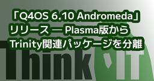
「Q4OS 6.10 Andromeda」リリース ─ Plasma版からTrinity関連パッケージを分離
Think IT（シンクイット）
「Q4OS 6.10 Andromeda」リリース ─ Plasma版からTrinity関連パッケージを分離 Debian 13.7とLinux 6.12.111を採用、新しいWi-Fi接続ツールも追加kawahara2026年10月12日シェア ポスト はてブ 優先するニュース提供元に追加 q4os.orgは10月8日(現地時間)、DebianベースのLinuxディストリビューション「Q4OS 6.10 Andromeda」をリリースした。 「Q4OS」は、軽量性と安定運用を重視したデスクトップ向けLinuxディストリビューション。標準のKDE Plasma版に加え、低スペックなPCでも動作するTrinity Desktop Environment版が提供されている。 「Q4OS 6.10」は、長期サポート版となるQ4OS 6 Andromedaの最新安定版。Debian 13.7 "Trixie"をベースとし、Linux 6.12.111、KDE Plasma 6.3.6、Trinity Desktop Environment 14.1.5を収録している。ハイライトは次の通り。 「Q4OS」は、Webサイトから入手できる。(川原 龍人/びぎねっと)[関連リンク]リリースアナウンス この記事をシェアしてください シェアする ポストする >ブクマする noteで書く 優先するニュース提供元にThink ITを追加 前の記事「SQLite 3.54.0」リリース ─ 約4％の高速化、CLIとクエリープランナーを改善 次の記事「COSMIC Epoch 1.10.0」リリース ─ ペンタブレットの画面割り当てに対応 関連記事この記事の筆者 kawahara kawaharaのプロフィールを見る 筆者の人気記事 「Apache HTTP Server 2.4.69」リリース ─ 20件の脆弱性を修正10月3日 23:23 「Python 3.14.8」リリース ─ 緊急のアップデートリリース10月1日 23:32 「Raspberry Pi OS」2026年10月6日版リリース ─ デスクトップ環境を改善10月8日 1:51 「Ubuntu 26.10」リリース ─ Rust製coreutilsへ全面移行10月15日 23:25 「Python 3.15.0」リリース ─
6日前
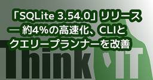
「SQLite 3.54.0」リリース ─ 約4％の高速化、CLIとクエリープランナーを改善 1
Think IT（シンクイット）
「SQLite 3.54.0」リリース ─ 約4％の高速化、CLIとクエリープランナーを改善 Windows XP以前のサポートを終了、ディスク使用量の確認機能も追加kawahara2026年10月12日シェア ポスト はてブ 優先するニュース提供元に追加 SQLite development teamは10月9日(現地時間)、組み込み型リレーショナルデータベースエンジンの最新版「SQLite 3.54.0」をリリースした。 「SQLite」は、データベースサーバーを必要とせず、アプリケーションへ直接組み込んで利用できるデータベースエンジン。単一ファイルでデータを管理でき、OS、Webブラウザ、スマートフォン、組み込み機器など幅広い製品で利用されている。 「SQLite 3.54.0」では、コマンドラインインターフェイス(CLI)の表示・操作機能を拡充したほか、クエリプランナーや一時ファイル処理を改善した。公式の「speedtest1」によるLinux x64環境での測定では、CPUサイクル数を基準として約4％高速化し、1年前のSQLite 3.51.0と比較すると約7.5％の性能向上を実現したという。 「SQLite 3.54.0」のハイライトは次の通り。 「SQLite 3.54.0」は、Webサイトから入手できる。(川原 龍人/びぎねっと)[関連リンク]リリースノート この記事をシェアしてください シェアする ポストする >ブクマする noteで書く 優先するニュース提供元にThink ITを追加 前の記事「Python 3.15.0」リリース ─ 遅延インポートやfrozendictを導入 次の記事「Q4OS 6.10 Andromeda」リリース ─ Plasma版からTrinity関連パッケージを分離 関連記事この記事の筆者 kawahara kawaharaのプロフィールを見る 筆者の人気記事 「Apache HTTP Server 2.4.69」リリース ─ 20件の脆弱性を修正10月3日 23:23 「Python 3.14.8」リリース ─ 緊急のアップデートリリース10月1日 23:32 「Raspberry Pi OS」2026年10月6日版リリース ─ デスクトップ環境を改善10月8日 1:51 「Ubuntu 26.10」リリース ─ R
6日前
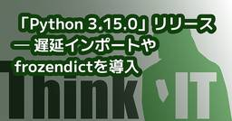
「Python 3.15.0」リリース ─ 遅延インポートやfrozendictを導入 1
Think IT（シンクイット）
「Python 3.15.0」リリース ─ 遅延インポートやfrozendictを導入 UTF-8を標準エンコーディング化、実験的JITとフリースレッド対応も強化kawahara2026年10月10日シェア ポスト はてブ Python Software Foundationは10月9日(現地時間)、プログラミング言語Pythonの最新版「Python 3.15.0」をリリースした。なお、10月1日にはPython 3.10.22、3.11.17、3.12.15、3.13.16、3.14.8もセキュリティ修正を含む更新版として公開されている。 「Python 3.15.0」はメジャーアップデートリリースに当たり、必要になるまでモジュールの読み込みを遅らせる遅延インポート、変更不能な辞書型「frozendict」、固有の番兵値を作成する「sentinel」などが導入された。また、標準エンコーディングがシステム環境にかかわらずUTF-8となった。 「Python 3.15.0」のハイライトは次の通り。 新しい「frozendict」は作成後に内容を変更できないマッピング型で、キーと値がハッシュ可能であれば「frozendict」自体もハッシュ可能となる。「sentinel」は、引数が省略されたことなどを表す固有の値を、簡潔かつ型付けしやすい形で作成するための組み込み型となる。 性能解析では、実行中のPythonプロセスへコードの変更や再起動を行わずに接続できる統計的サンプリングプロファイラー「Tachyon」が追加された。実験的JITコンパイラーも強化され、公式の測定では標準インタープリターと比較してx86-64 Linuxで平均7～8％の性能向上が報告されている。 「Python 3.15.0」は、Webサイトから入手できる。(川原 龍人/びぎねっと)[関連リンク]ReleaseWhat's new この記事をシェアしてください シェアする ポストする >ブクマする 前の記事「NVIDIA 615.78.08」リリース ─ vkd3d-protonの遅延やカクつきを改善 次の記事「SQLite 3.54.0」リリース ─ 約4％の高速化、CLIとクエリープランナーを改善 関連記事この記事の筆者 kawahara kawaharaのプロフィールを見る 筆者の人気記事 「
8日前

「Linuxネットワーク標準教科書」について
Think IT（シンクイット）
「Linuxネットワーク標準教科書」についてitoh2026年10月8日基礎から学ぶLinuxネットワーク実習シェア ポスト はてブ 優先するニュース提供元に追加 はじめに「Linuxネットワーク標準教科書」は、特定非営利活動法人エルピーアイジャパンが提供している「標準教科書シリーズ」のうち、ネットワークの学習に利用していただくことを目的として開発、公開している教科書です。「Linux標準教科書シリーズ」は、様々な種類の教科書を提供していますが、特にLinuxの基礎を学習するために以下の3冊が提供されています。・「Linux標準教科書」主にLinuxのコマンド操作を学習するための教科書です。・「Linuxサーバー構築標準教科書」主にLinuxを使ってWebサーバー、DNSサーバー、メールサーバーの構築を学習するための教科書です。・「Linuxシステム管理標準教科書」主にLinuxのシステム管理を学習するための教科書です。そして4冊目となる「Linuxネットワーク標準教科書」は、上記3冊で詳細に解説できなかったLinuxネットワークについて補完するために企画、執筆されました。また、従来はPDF版やEPUB版、Kindle版で提供されていましたが、Think ITで連載形式で読むことができるようになりました。もちろん、1冊にまとめられた電子版も入手できますので、「早く読みたい！」という方はダウンロードしてみてください。「Linuxネットワーク標準教科書」ダウンロードページhttps://linuc.org/textbooks/network/全体の流れ本教科書では、以下の通りに実習を進めます。1章 ネットワーク学習環境の構築実習環境の構築と、VirtualBoxのネットワークについて解説します。また、パケットキャプチャを行うためにWiresharkをインストールします。2章 IPアドレスインターネットの通信の基盤であるIPの仕組みと、IPアドレスについて解説します。3章 TCP/UDP/ICMPIP通信の上で使用される、TCPやUDP、ICMPについて解説します。4章 パケットフィルタリングIPアドレスやポート番号などを元にパケット通信の許可や拒否を行うパケットフィルタリングについて解説します。5章 ルーティング/IPマスカレード/プロキシインターネットの基本的な通信の
10日前
Meta、新デバイス対応のSDK最新バージョンやAIグラス向け開発環境、2D/3Dゲーム制作ツールを発表 ほか
Think IT（シンクイット）
Meta、新デバイス対応のSDK最新バージョンやAIグラス向け開発環境、2D/3Dゲーム制作ツールを発表 ほかiioka2026年10月5日週刊VRウォッチシェア ポスト はてブ 優先するニュース提供元に追加 今週も、バーチャル領域の最新動向をお届けします。Metaからは、重さ約100グラムの新型メガネ型VRデバイス「Meta VR Glasses」向けの開発環境であるv207 SDKの公開や、AIグラス向け開発環境の拡充、さらに文章入力で2D・3Dゲームを制作できる「Horizon Create」と「Horizon Studio」の発表など、開発支援に関する注目のアップデートが相次いで発表されました。また国内の社会実装事例として、株式会社G1 companyがのぞくだけで360度映像を楽しめる「VR双眼鏡」の法人・自治体向け販売およびレンタルを開始したニュースをお伝えします。Meta、新型デバイス「Meta VR Glasses」の開発環境を公開Metaは2027年春に発売を予定している、重さ約100グラムのメガネ型VRデバイス「Meta VR Glasses」に向け、アプリ開発ツール群「v207 SDK」を公開しました。本機はOSやストアがMeta Questと共通で、操作は視線と手が中心となります。視野角は約70×66度と狭いものの、高解像度で文字を読みやすく、重要なUI要素を中央に配置することが推奨されています。開発手段はUnity・Unreal、Android、そしてWebの3系統が用意され、シミュレーターを活用することで実機がなくても検証が可能です。さらにAIエージェント向けのデバッグ・ビルドツール「Meta VR CLI」なども提供され、開発効率の向上とストアでの発見性改善が図られています。本ニュースの詳細はこちら：Meta、新型デバイス「Meta VR Glasses」の開発環境を公開https://www.moguravr.com/meta-vr-glasses-v207-sdk/Meta、AIグラス向け開発環境を拡充 3つの開発手段を導入可能にMetaはAIグラス向け開発環境のアップデートを発表し、主に3つの開発手段と配信の場を導入します。1つ目はモバイルアプリを対応させる「Wearables Device Access Toolkit 1.0」
13日前
【見れば分かる。見ないと話せない】AIで作った成果物を、理解しているのか
Think IT（シンクイット）
【見れば分かる。見ないと話せない】AIで作った成果物を、理解しているのかkaoringo2026年10月1日Gen AI Timesシェア ポスト はてブ 優先するニュース提供元に追加 はじめに本連載は、生成AIコミュニティ「IKIGAI lab.」で活動しているメンバーが、それぞれの視点から、AIの変化と実務への示唆を発信しています。生成AIに、企画書の構成、資料の要約、調査、コード生成などを頼めば、短時間で整った成果物が出てくるようになり、仕事のスピードは確実に上がっています。一方で、AIが作った資料を読んでいるときは理解できたつもりでも、画面を閉じると自分の言葉で説明できない、という経験はないでしょうか。「この資料では何を言っているのか」「なぜこの結論なのか」と問われると、うまく話せない。見れば分かるが、見ないと話せない。「成果物が手元にあること」と「自分が理解していること」は別です。筆者作成（ChatGPT）【AIエージェント時代の新資格】AIエージェント・ストラテジストから見える「これから求められる人材」の記事では、AIエージェントを業務に入れるときに問われるのは、どのモデルをどう使うかといった操作よりも「どこまで任せるか」「どこで止めるか」「何を成果と呼ぶか」といった人間側の設計だと書きました。AIを使える人から、仕事を設計できる人へ、という話です。【出典】「AIエージェント・ストラテジスト」(一般社団法人AICX協会)今回はその先を考えます。仕事を設計し、AIに任せる側の人間は、AIが作ったものを本当に理解しているのか。企業がAI活用による仕組み化を進めるなかで、人間に何を残すのか。「AIと理解」の話を、仕事の現場に引き戻して考えます。なぜ「分かった気」になるのかAIを使って作成した内容は読みやすく、構成も整っています。そのため、読んでいる間は理解できているように感じます。しかし、画面を閉じて説明しようとすると、言葉が出なくなることがあります。AIを使わない場合は、自分で書いて手が止まる経験そのものが、「まだ理解していない状況」だと気づくサインでした。しかしAIは、自分の理解が浅いままでも完成品を出してしまうため、そのブレーキが働きにくくなります。「読んだこと」を「理解したこと」と取り違えやすいのが、現在の使い方の特徴だと感じています。「ゴンドラに乗っ
17日前
インシデント対応の「経験値」と「勘」はどこで育つのか
Think IT（シンクイット）
インシデント対応の「経験値」と「勘」はどこで育つのかitoh2026年9月24日SREが語るインシデント対応の実践シェア ポスト はてブ 優先するニュース提供元に追加 はじめにこんにちは。ソフトウェアエンジニアの髙石です。「SRE Kaigi 2025」で「どうやればインシデント対応能力を鍛えられるのか?」というテーマで登壇し*1、その縁で本連載に記事を寄稿することとなりました。インシデント対応の手法は書籍やWebなどから容易に手に入ります。しかし、読んだだけでスムーズに対応できるようになるとは限りません。また、本記事が公開される2026年9月時点では、AIエージェントをインシデント対応に活かす取り組みが広がっています。これによりインシデント対応における人間の立ち位置も変わる可能性があります。第2回となる本記事では、そのような中で「インシデント対応の経験をどう手に入れるのか」「インシデント対応における優れた勘をどう獲得するか」というテーマについて扱います。*1： 「どうやればインシデント対応能力を鍛えられるのか?」(「SRE Kaigi 2025」)一次調査は誰が行うのかインシデント発生時、誰が関連するログやメトリクスを調べ、原因候補と次のアクションを提示する一次調査を行うのでしょうか。AI以前はオンコール担当者が行うことが多かったかと思います。今でもそのような体制をとる組織は多いでしょうが、AIエージェントが一次調査をするケースが増えつつあるのではないでしょうか。AWSのKiroチームが公開した事例では、深夜のアラームに対して原因の特定とネクストアクションの提示までを行っています*2。筆者の所属するフライルでも調査用のAIエージェントが常駐しており、一次調査をまかせることが当たり前になっています。現場対応していたエンジニアの作業内容から調査がなくなり、報告を読んで、精査し、次のアクションを決めることに変わりつつあります。つまり、仮説生成と検証の大部分をAIが担い、人間は提示された結果を基に判断するようになるといえます。「AIエージェントに調査だけでなく判断までさせれば良い」と思う方もいるかもしれません。しかし、現時点のAIエージェントでは限界があり、2025年のベンチマークではSREシナリオの解決率が13%強に留まったという結果もあります*3。また、操作時の責任と
24日前
【Who am I?】AIエージェントは「新しいユーザー」になる？
Think IT（シンクイット）
【Who am I?】AIエージェントは「新しいユーザー」になる？kaoringo2026年9月17日Gen AI Timesシェア ポスト はてブ 優先するニュース提供元に追加 はじめに本連載は、生成AIコミュニティ「IKIGAI Lab.」のメンバーが、それぞれの専門領域で培ってきた知見を持ち寄り、技術・ビジネス・ガバナンスなどの多角的な視点から最新のAI動向をひも解いていきます。トレンドや単一の正解を求めるのではなく、現場の目線から半歩先の未来を見通すためのヒントを共有できればと思っています。ここ数年でAIを取り巻く状況は一変しました。生成AIを利用して文章を作成したり、コードを生成したりすることは、もはや珍しい光景ではありません。業務の現場にも、AIを前提とした働き方が次々と入り込んでいます。そして現在、AIは「人間の作業を支援する」だけでなく、自ら判断し、外部のシステムを操作する「AIエージェント」へと進化しつつあります。CRMから情報を取得する、ファイルを作成する、APIを呼び出し、メールやチャットを送信する。これまで人間が画面を操作して行っていた仕事を、AIが一連の処理として実行するようになってきました。しかし、AIの進化の裏で企業のIT管理に新しい問題が生まれています。今回はそんな、新たに生まれた問題について取り上げていきます。誰が操作したのか？筆者がAIで生成これまでのシステムでは、基本的に「誰が操作したのか」をユーザーに紐付けて考えることができました。しかしAIエージェントが人間の指示を受け、その指示に基づいて複数のシステムを自律的に操作するようになると、単純にはいきません。たとえば、社員がAIエージェントに「顧客情報を確認して、レポートを作成して」と指示したとします。AIエージェントはCRMへアクセスし、必要な情報を取得してレポートを作成するかもしれません。この時、CRMへのアクセスを実際に行ったのは誰なのでしょうか？社員本人なのか、それともAIエージェントなのか。「誰が操作したのか」この問いが、AIエージェント時代のIAM(Identity and Access Management)を考えるうえで重要になってきます。従来は「人間 → システム」という関係が基本でした。これからは、その間にAIエージェントが入り、「人間 → AIエージェント
1ヶ月前
AIはペネトレーションテストを自律化できるのか―OWASP APTSが示す統制の必要性
Think IT（シンクイット）
AIはペネトレーションテストを自律化できるのか―OWASP APTSが示す統制の必要性kaoringo2026年8月27日AIにまつわるセキュリティあれこれシェア ポスト はてブ 優先するニュース提供元に追加 OWASP APTSが扱うものAIを使った脆弱性診断やペネトレーションテスト（以下、ペンテスト）の話題では、「AIが脆弱性を見つけられるか」「人間のペンテスターを置き換えられるか」という点に注目が集まっています。しかし、実際の業務で先に問題になるのは、検出性能だけではありません。ペンテストは、対象システムに対して実際の攻撃に近い操作を行う業務です。ポートスキャン、認証試行、脆弱性の検証、権限昇格の確認、横展開の検証など、実施内容によってはシステムに負荷をかけたり、保存されているデータに影響を与えたりします。人間のペンテスターが行う場合でも、対象範囲、実施時間、禁止事項、緊急連絡先、停止条件を事前に決めます。では、その一部をAIエージェントに任せる場合、何を決めておく必要があるのでしょうか。この問いに対する標準として公開されているのが、OWASPの「Autonomous Penetration Testing Standard (APTS)」です。OWASPの説明では、APTSは自律型ペンテスト基盤のためのガバナンス標準です。LLMを利用する基盤も対象に含まれており、そうした基盤に適用される要件も定められています。ベンダが提供する製品、サービスとして運用されるペンテスト基盤、企業内で内製されたペンテスト基盤のいずれも対象になり得ます。APTSは、それらのシステムが安全に、透明性を持って、定義された境界内で動作するために満たすべき要件を整理しています。本稿では、2026年7月現在のAPTS v0.1.0を対象とします。APTSは、OWASPのIncubator Projectに分類されています。Incubator Projectとは、仕様を固め、アイデアを実証しながら開発が進められている実験的段階のプロジェクトを指します。APTSは、脆弱性を発見する手法を説明しているわけではありません。OWASP自身も、APTSはPTES（The Penetration Testing Execution Standard）、OWASP Web Security Testing
2ヶ月前
【導入から本番運用へ】AIエージェント、「導入8割・実装3割」のギャップを読み解く
Think IT（シンクイット）
【導入から本番運用へ】AIエージェント、「導入8割・実装3割」のギャップを読み解くkaoringo2026年8月20日Gen AI Timesシェア ポスト はてブ 優先するニュース提供元に追加 はじめに「AIエージェント」という言葉が業界を席巻してから、およそ1年が経ちました。この間に発表された調査を眺めると、「8割が導入済み」という威勢のよい数字がある一方で、「自動化できている業務は3割」という冷静な数字もあり、結局進んでいるのか止まっているのか分かりにくい状況です。今回は、2026年上半期を中心に公開された国内外の調査データを横断し、数字が食い違う理由を整理したうえで、導入と成果のあいだに横たわる「ギャップ」の正体を読み解きます。1. 現在地-「導入8割」と「自動化3割」は矛盾しないまず、楽観側の数字から見ていきます。エージェント開発フレームワークを提供するCrewAIが年間売上高1億ドル以上、従業員数5,000人以上の企業(世界7地域)の経営幹部および上級幹部を対象に実施した企業調査によれば、回答企業の65%がすでにAIエージェントを利用しており、81%が「全社展開済み、または展開拡大中」と回答しています。ところが同じ調査の中に、対照的な数字も含まれています。AIエージェントで自動化できているワークフローは、平均で31%にとどまるのです。つまり「エージェントを導入したか」と問えば8割が手を挙げ、「業務がエージェントで回っているか」と問えば3割に落ちる。この2つの数字は矛盾しているのではなく、「導入」という言葉の定義が調査ごとに違うだけです。PoC(概念実証)を含めるのか、全社展開だけを数えるのかで、数字は簡単に倍以上変わります。では、8割と3割のあいだにいる「入れたのに回っていない」企業では、何が起きているのでしょうか。【出典】「Survey: Enterprises move AI agents from pilots to production」(Digital Commerce 360 2026/02/11)2. なぜ止まるのか―原因は技術ではなく「設計」Gartnerは2025年6月の発表で、agentic AIプロジェクトの40%超が2027年末までに中止されるとの予測を示しました。予測されている理由として挙げられているのは、以下の3つです。コスト
2ヶ月前
現場の声から生まれた国産テスト自動化ツール「ATgo」が切り開く、生成AIを駆使した次世代テスト自動化の最前線
Think IT（シンクイット）
現場の声から生まれた国産テスト自動化ツール「ATgo」が切り開く、生成AIを駆使した次世代テスト自動化の最前線itoh2024年11月6日インタビューシェア ポスト はてブ 優先するニュース提供元に追加 「ATgo」は、RGS株式会社(六元素情報システム株式会社より社名変更)が開発したWebシステムのテスト自動化ツールだ。その多くが海外製品で占められている中、ATgoは国産製品として高い支持を集めているツールの1つである。そんなATgoは、現場の切実なニーズに応えるために開発されたという。そこで本記事では、生成AIやテスト自動化の動向を踏まえ、ATgoの概要や開発の背景、今後のロードマップについて、同社の石 則春氏と角田 聡志氏にインタビューを行った。(左)RGS株式会社 営業本部 本部長 角田 聡志(右)CTO イノベーション本部長 兼 研究開発部部長 石 則春氏セキュアな開発環境で支持されるテスト自動化ツールATgoは、WebアプリケーションのUIテストとAPIテストを自動化するツールだ。ローコードによるテストスクリプトの作成、テストレポートとエビデンスの自動作成、インストール不要なパッケージ型製品であることなどが、主な特徴となっている。さらに基本機能に加えて、生成AIを活用したテストステップの自動生成やDevOps・CI/CD連携など、先進的な機能も備えている。業種を問わず幅広い企業に導入されているが、中でも金融・医療・製薬など、提供するサービスや開発環境自体に高いセキュリティが要求される業界に強い製品だという。特に金融業界の現場では、インターネットに接続できないセキュアな環境での開発が求められることが多い。多くのテスト自動化ツールがSaaSで提供されているが、ATgoはパッケージ型製品であるため、そのような現場でも制約なく使えることが支持されている理由の1つだ。特にATgoが得意とするのは、リグレッションテスト(ソフトウェアの一部を改修した際に、他の箇所に意図しない影響が出ていないか、全体の動作を確認するテスト)とエビデンス作成の支援である。ATgoは、独自のスクリプト言語を用いることで、柔軟性の高いテストを定義できる。加えて、レコーディング機能や生成AIにより、コードを書かずにテストステップを作成することも可能だ。さらにレコーディングや生成AIで作成したテ
2年前
屋外でも屋内でも使えるARグラス「XREAL Air 2 Pro」、10月27日に予約開始
Think IT（シンクイット）
屋外でも屋内でも使えるARグラス「XREAL Air 2 Pro」、10月27日に予約開始iioka2023年10月23日週刊VRウォッチシェア ポスト はてブ 優先するニュース提供元に追加 先週もVR/ARに関する多くのニュースが報じられました。中でも注目すべきは、XREAL Air 2 Proの日本発売が発表されたことでしょう。屋外でも屋内でも使えるARグラス「XREAL Air 2 Pro」、10月27日予約開始日本Xreal株式会社は、ARグラスの最新モデル「XREAL Air 2 Pro」を発表しました。価格は61,980円（税込）で、10月27日（金）から公式HP・家電量販店で先行予約の開始を予定しており、発売は11月17日（金）です。「XREAL Air 2 Pro」限定の機能として、レンズの透過度（グラスの色の濃さ）を、ワンタッチで3段階に設定できます。テンプル（つる）横に設置されたボタンを押すことで、例えば暗い寝室では0％、明るい車内では100％といったように、映像を見やすいように変更できます。本ニュースの詳細はこちら：屋外でも屋内でも使えるARグラス「XREAL Air 2 Pro」、10月27日予約開始https://www.moguravr.com/xreal-air-2-pro-release-date/マイクロソフトのウェアラブルデバイス関連特許が公開。ARグラスや「外部機器」との接続を構想か米国特許商標庁（USPTO）は、ウェアラブルデバイスに関するマイクロソフトの特許を公開しました。これは2022年4月に出願されたもので、特許内の図面にはグラス型デバイスも記載されています。特許の正式名称は「ウェアラブルデバイス上のモジュラー式電源と各種機能」。図面には、ARグラスに搭載する着脱可能なバッテリーが記載されています。また、ARグラスをネックレスやベルト、バックパックなどと接続する仕組みも記載されています。本ニュースの詳細はこちら：マイクロソフトのウェアラブルデバイス関連特許が公開。ARグラスや「外部機器」との接続を構想かhttps://www.moguravr.com/microsoft-wearable-device-patent-2023-10/コロプラ子会社の360Channel、米Pixel Canvasと提携。UE5ベースのWe
3年前
AR/VR両対応の新型スマホZenfone AR国内でも発売へ！
Think IT（シンクイット）
AR/VR両対応の新型スマホZenfone AR国内でも発売へ！iioka2017年4月17日週刊VRウォッチシェア ポスト はてブ 優先するニュース提供元に追加 今週は、VR IntelligenceによるVR市場調査報告やアドアーズのVR PARK TOKYOの人気ぶり、Unityのインドでの事業拡大など、VR市場に関するニュースが相次ぎました。一般の人がどんな体験を求めているのか、よりユーザー体験に合わせた設計を行っていく必要があるようです。多人数参加のVR会議ができる「NEUTRANS」提供開始VRプロダクトの企画や開発を手掛ける株式会社Synamonは、VRコンテンツ制作用のベースシステム「NEUTRANS（ニュートランス）」の企業向け提供を4月11日より開始しました。NEUTRANSはオンライン接続による複数ユーザーでのマルチプレイといった機能を有しており、VRで会議室を作り、現実ではできない動作を用いたブレストや、遠隔地のメンバーとの会議ができるシステムの構築や、コンテンツや3Dモデルなどを配置し、ユーザーの好きな形で利用可能なVRショールームの構築を行うことができます。公式ページでは「持つ、投げる」「レーザーポインタでの操作」といった、基本動作の紹介や、デモ動画のアップロードも行われています。提供方式としては、BtoBモデル、BtoBtoCモデルなどが想定されています。導入の初期費用は300万円程度、開発期間は15営業日程度からとされていますが、開発内容によって変動します。今後はベースシステムの機能拡張を行いつつ、活用事例に合わせたVRプロダクトのサンプル開発、パッケージ化を推進していくとのこと。なお、今回の提供開始に合わせたキャンペーンとして、問い合わせ先着5企業まで初期費用を割り引きしての提供が行われます。本ニュースの詳細はこちら：多人数参加のVR環境も構築可能 VRベースシステム「NEUTRANS」提供開始http://www.moguravr.com/neutrans-vrsystem/2017年のVR業界の調査結果を発表、VR市場の成長を見込む一方でコンテンツ不足と価格がボトルネックVR業界をリードする有識者で構成される団体VR Intelligenceは今年の3月に、500名強を対象に、2017年のVR業界の調査結果を発表しました。それに
10年前